Movie review by : SFAM
Year : 2003
Directed by : Byung-chun Min
Written by : Byung-chun Min
Degree of Cyberpunk visuals : Very High
Correlation to Cyberpunk themes : Very High
Rating : 9/10
Key cast members :
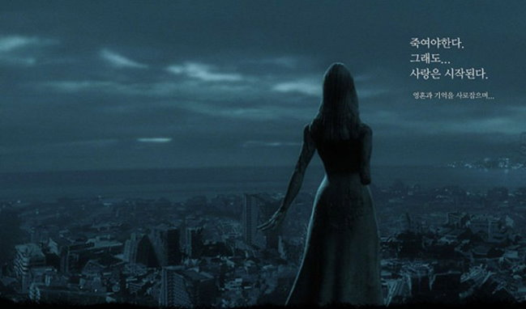
Overview: Natural City is a high priced attempt by the Korean movie industry to break into the Scifi Genre. The quality of the effects in Natural City clearly shine, both in the absolutely terrific set pieces, the painted backgrounds and the very realistic future setting. This is a cyberpunk movie to its core, with every possible aspect of cyberpunkness oozing from every pore of this movie. We get cyborgs, genetically engineered and cybernetically enhanced people, dominating corporations, theft and greed, seedy underground people and scenes, information access issues, and MASSIVE cyberpunk style. But truly, the reason Natural City rates this high is the absolutely wonderful cyborg character study in exploring issues of humanity.
The Setting: Natural City as a title is 180 degrees from what you get in a setting - nothing is real here. In this dystopian setting, genetic engineering and cyborg development have become an accepted way of life. Pretty much everyone in this city lives a miserable existence, in fact, its expected that life is pain. Vacations are taken in the equivalent of a Star Trek Holodeck type machine. The ultimate dream of everyone in this city is to become rich enough to retire to a floating hotel called Muyoga (see the picture immediately below), which advertises that it can erase your current memory and place you in a "virtual" life of your own choosing. This is extremely interesting, especially when compared to Oshii's Avalon, in which one view of the the "ultimate" life is one where you are in a simulated reality of your own mind even though your body is a slobbering mess in the "real" world.
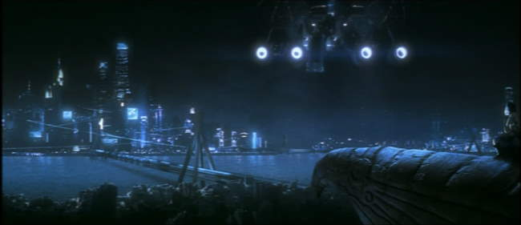
In Natural City, Cyborgs perform a myriad of societal functions - everything from entertainment and dancing, to restaurant helpers to working on the police force. To perform all these functions effectively, Cyborgs have a degree of self-awareness. This causes significant complications when their expiration date nears, as they know what it means to "expire." While some of the characteristics seem vaguely familiar to another far more famous cyberpunk movie (cyborgs with expiration dates, for instance), the story itself is radically different.
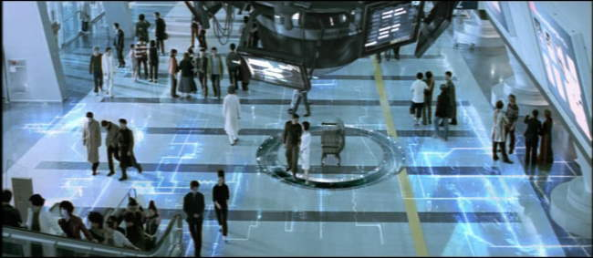
The Story: Natural City centers on the internal struggles of a highly talented cop named "R." He is tasked with finding and capturing renegade cyborgs, but ends up falling in love with a cyborg dancer named Ria who's expiration date is only 3 days off. The movie centers on R's compromising his principles and dealing with the cyborg underworld in a vain attempt to find a way to save his Ria. He finds a shady cyborg doctor who promises that if he finds a person with the right genetic match, he can inject part of their brain cells into Ria, which will save her. The doctor finds such a match in a street girl named Cyon.
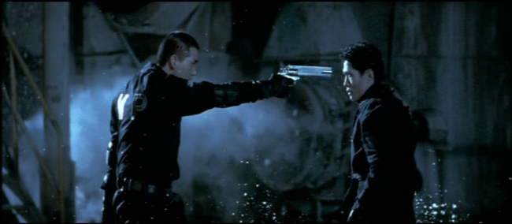
Complicating matters, R's best friend Croy, who is also his boss and fellow police detective, has discovered his duplicity. During a raid to capture some renegade warrior cyborgs, Croy notices that R is not shooting them in the head (which kills them be wiping out their AI chip), but is instead going back later and collecting the AI chips to sell for money. Croy tracks R back to the shady doctor. Worse, one of the warrior cyborgs who escaped is also after Cyon for reasons that become all too apparent as the movie unwinds.
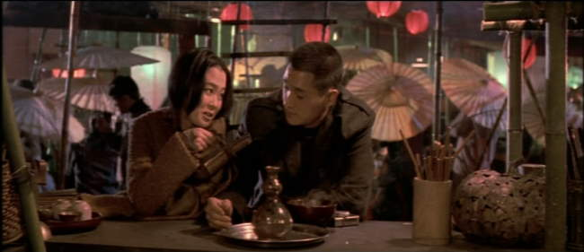
The Look: Natural City's atmosphere is a grimy, lived-in futuristic environment. In some of the police scenes, Natural City comes across like a live-action Jin Roh movie (Jin Roh is definitely an influence for the action visuals). The high-quality and very original Scifi set pieces and occasional CG fits wonderfully, and along with the artistic backgrounds add up to a very immersive experience. The surround sound is not stunning, but is certainly decent and doesn't detract from the experience. On top of this we get some wonderfully symbolic visuals, such as when Cyon sits atop a stone eagle statue, dreaming of life on the virtual hotel.
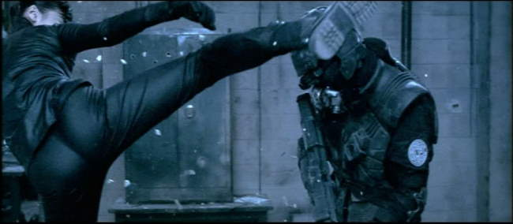
The Colors: Like most cyberpunk movies, Natural City uses one dominating color palette for the majority of the scenes. Blue is the color of choice, but varies from ultra-light to dark and dense blues. The lighter scenes usually depict high-tech human aspirations, whereas the darker scenes are left for massive action shots and for shots depicting the destruction of humanity, such as the gritty cyborg replacement lab. Every so often, we also get some really nice oranges and browns, but these colors are usually used more as chapter transitions.
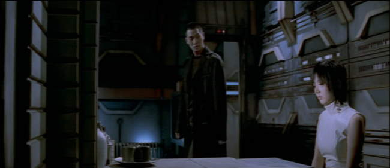
The Action: Natural City is a character exploration first, but the action and effects are on display, and in high quality. The action involves both slo-mo and high speed camera shots, along with LOTS and LOTS of blood and gore. The ending especially is somewhat of a gorefest, which is weird to see in a movie that is mostly a drama in nature. Also, near the end of the movie, we get treated to an evil, but ultra-hot cyborg warrior chick in skin tight lycra who engages in some major ass-kicking (see above for a pic of HER ass while kicking someone!). Talk about a plus! While we're on the subject, we also get treated to some cute asian cyborg boobies at the beginning of Natural City - definitely a nice way to start the pic! (although, when you understand what the beginning boobie scene signifies it sorta takes away the fun).
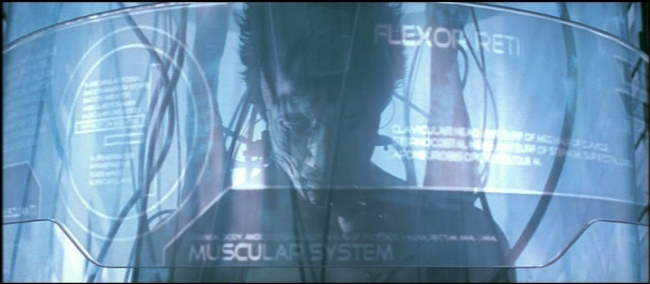
The Pacing: As I mentioned earlier, this IS a Korean movie. My wife is Korean, so I'm somewhat used to the pacing we see here. From reading a few reviews, Natural City has been panned for being way too slow and plodding in the middle. All I can say is, "Welcome to Korean Cinema." This is really a case where story telling is just different there. For a Korean, this movie is not at all slow, but has rather standard pacing, which means we get REAL in-depth and repeated scenes with the purpose of mood and detailed character study. Most important for Koreans is to be able to identify with the emotion and mood the characters are experiencing. Natural City takes the time to do this with all the main characters.
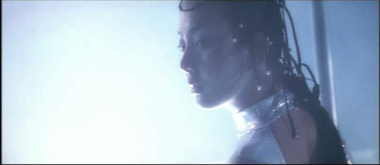
The characters really build in believability and engagement as the story progresses. At the beginning, R appears quite shallow, as does his friend and the street girl Cyon. By the end, all three, and especially Ria, his cyborg lover grow to be characters you really empathize with. The motivations for all become clear, including their virtues and flaws. The ending is also a rather "normal" Korean dramatic love story ending, which is to say, one very different from how an American film might end. Its not a feel-good movie, but then again, few Korean dramas are.
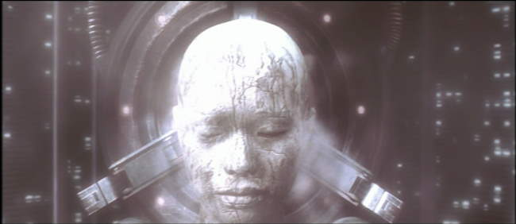
For me, the highlight of Natural City centered on Ria, the cyborg. To me, Ria captures the cyborg struggle for humanity better than any character in all cyberpunk movies save one scene (the Blade Runner' sRoy Batty "I've seen things you wouldn't believe" soliloquy, of course). While I didn't catch this the first time through, the very beginning of the movie is told from Ria's perspective, and then really, the last third of the movie centers on Ria (minus the action sub-plots). There are a few scenes that make it clear she "knows" what's happening to her. She is programmed to be a dancer, but as she reaches her expiration date, she no longer can do this well. In one scene, Cyon shows her the "1 day" notice that arrives in the "Fifth Element" style mail slot. As her "time" approaches, you really do get the feeling of the Rutger Hauer speech at the end of Blade Runner, although Ria conveys this sentiment more broadly over a number of scenes and images.
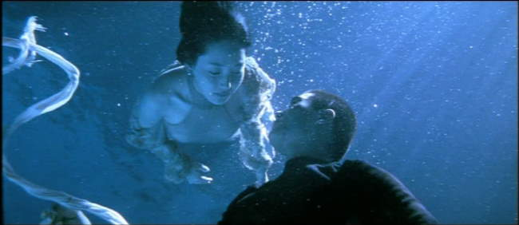
The Bottom Line: If you like cyberpunk films, the visuals alone make this a MUST SEE. If you like character studies in science fiction settings, you probably also want to see this. I truly LOVE Natural City, but be warned, the pacing is different from what you might expect. This is a Korean movie, and certainly plays like one. Also, be warned - like Wonderful Days, the ending has standard Korean Melodrama type stuff. While some might argue this doesn't belong in the top 10, for me there's no doubt that it does. The action and visuals are great, but Ria's story clearly forces it there if nothing else.
Discussion of Ria's motivations: This whole movie takes on more meaning when you really begin to understand R's solution to ensure they stay together. In order for R and Ria to be together, R tries to save up enough money to get passage on Muyoga, the flying VR hotel. In reality what this means is R wants to become captured in his own dream world with Ria - which if he gets there on time, presumably her "essence" can be entered into the VR program. Ria knows that whatever happens, she will be dead in a few days - her life will cease to exist. While Ria will still be dead, she will at least die knowing that her essence lives on in R for the rest of his days as he sits in a vegetative state, similar to those in Avalon. This is a very different approach to meeting her end than Roy Batty does in Blade Runner. Roy Batty fights for his essence to continue, fearing that nobody will remember him, whereas Ria, who knows her essence will be lost, at least takes solice in the idea that R will remember her. Unfortunately for them, Korean melodramas never end so happily - Ria dies knowing her existence is lost forever. Worse than this, Cyon, who was rescued by R, would have traded places with Ria, as Cyon has NEVER had anyone care enough to remember her.